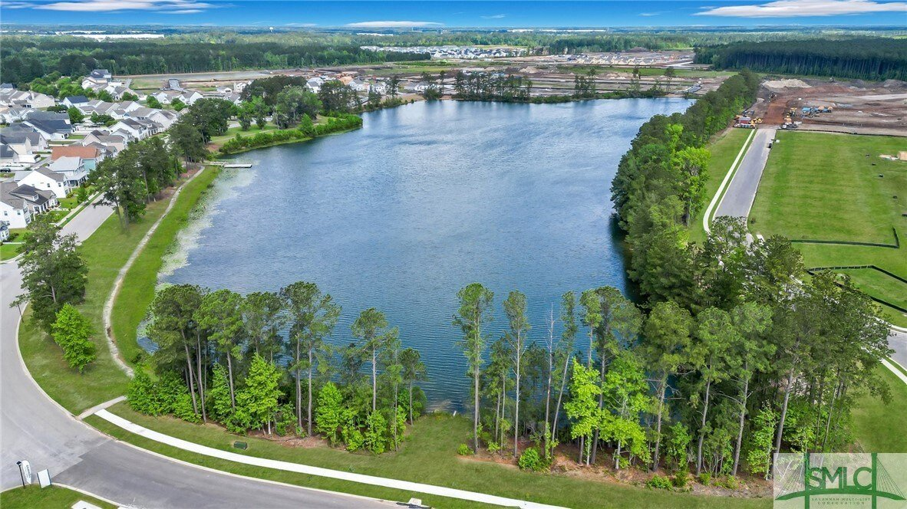
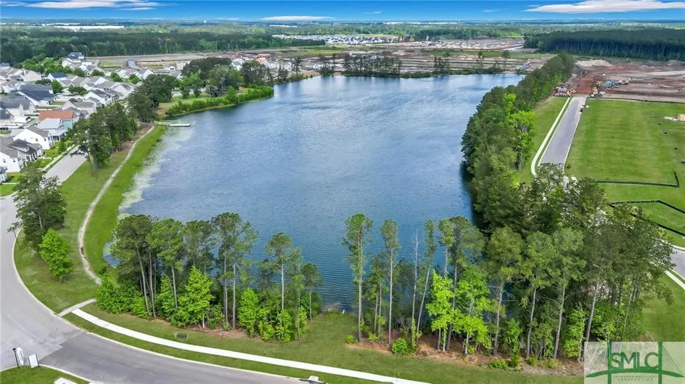

Photo pair 1


geometrically_supported
Shared-image context: No cross-listing duplicate found by the current three-hash test
Hash / geometric comparison evidence
{
"hash_hamming": {
"dhash": 1,
"phash": 0,
"center_phash": 0
},
"hash_min": 0,
"priority_policy": "obvious_v1_both_phashes_le_6_nonshared",
"exact_hash_hamming": {
"phash": 0,
"center_phash": 0
},
"orb_ransac": {
"score": 0.851,
"detail": {
"inliers": 851,
"ratio_matches": 851,
"coverage": 0.6398156436776676,
"homography": [
[
0.9997671397854246,
-4.745377442872275e-05,
0.04922345873705179
],
[
2.073028790021842e-05,
0.9998694290566343,
0.0007661225172456743
],
[
-2.332871227036998e-07,
-1.702760710381866e-07,
1.0
]
]
},
"comparison_ms": 12.181897007394582,
"feature_lookup_or_extraction_ms": 211.067306008772
}
}